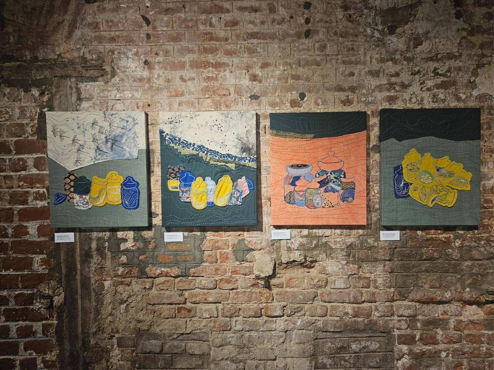
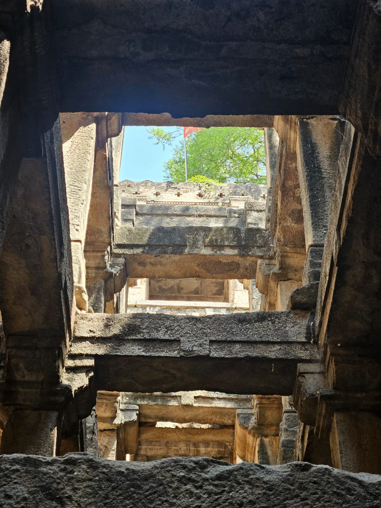
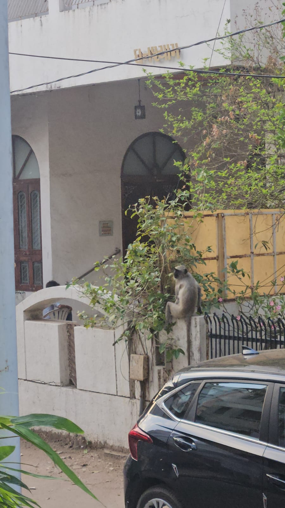
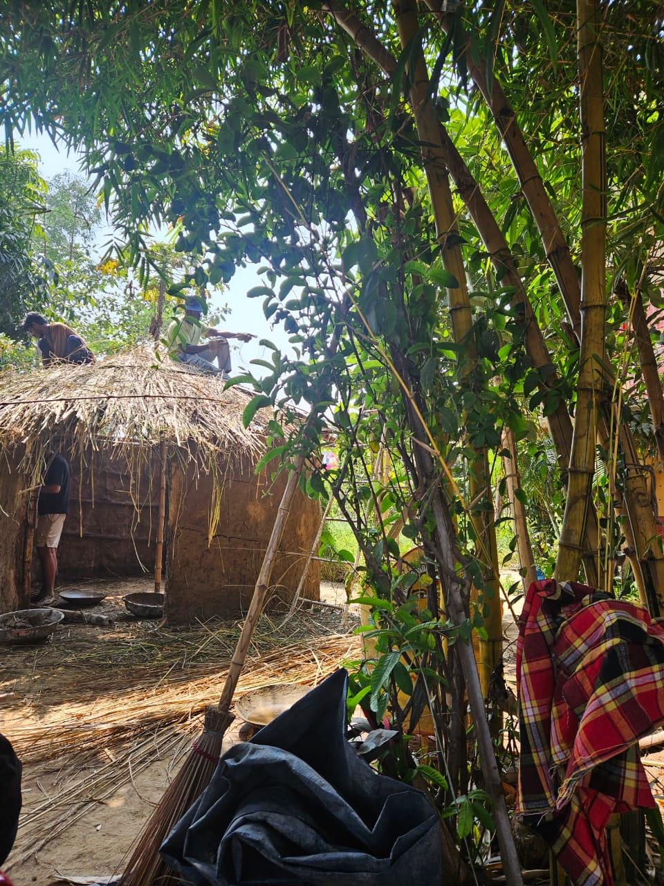
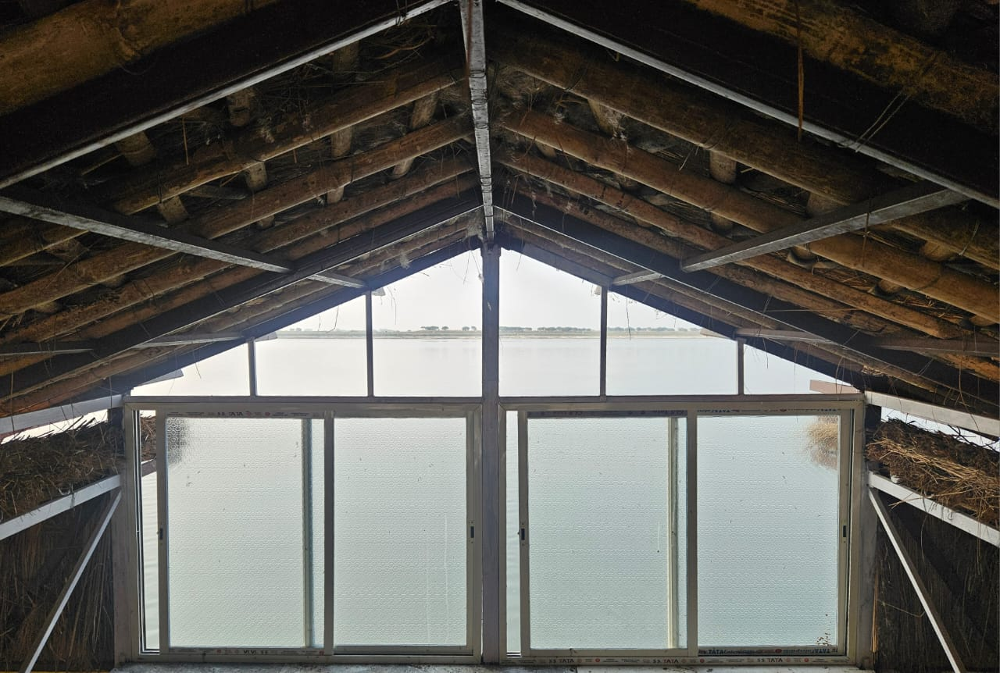
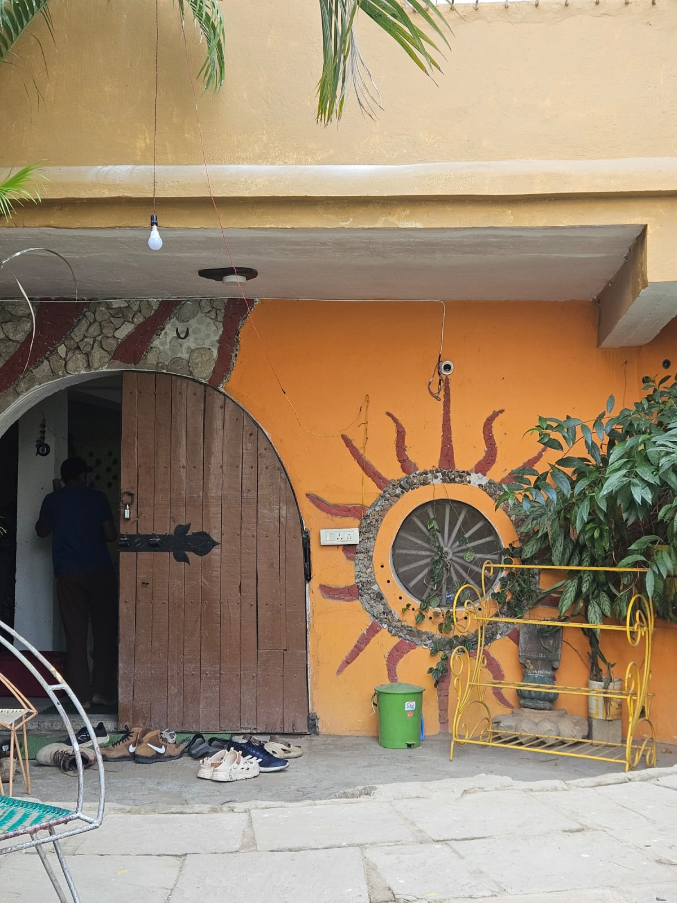
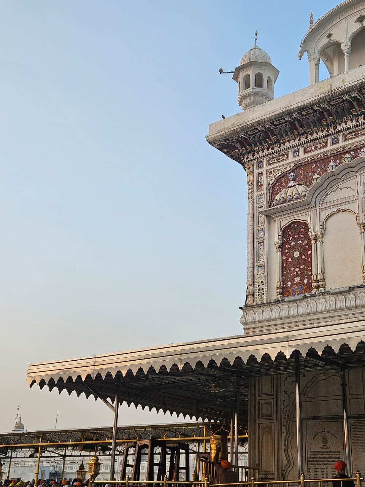
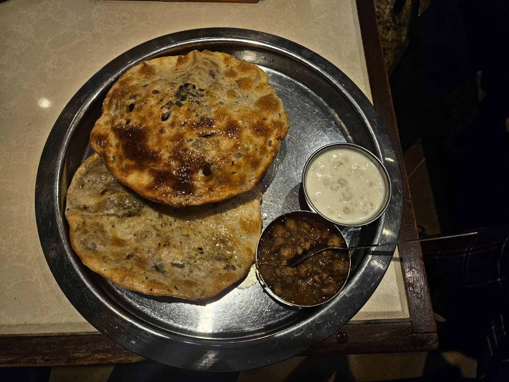
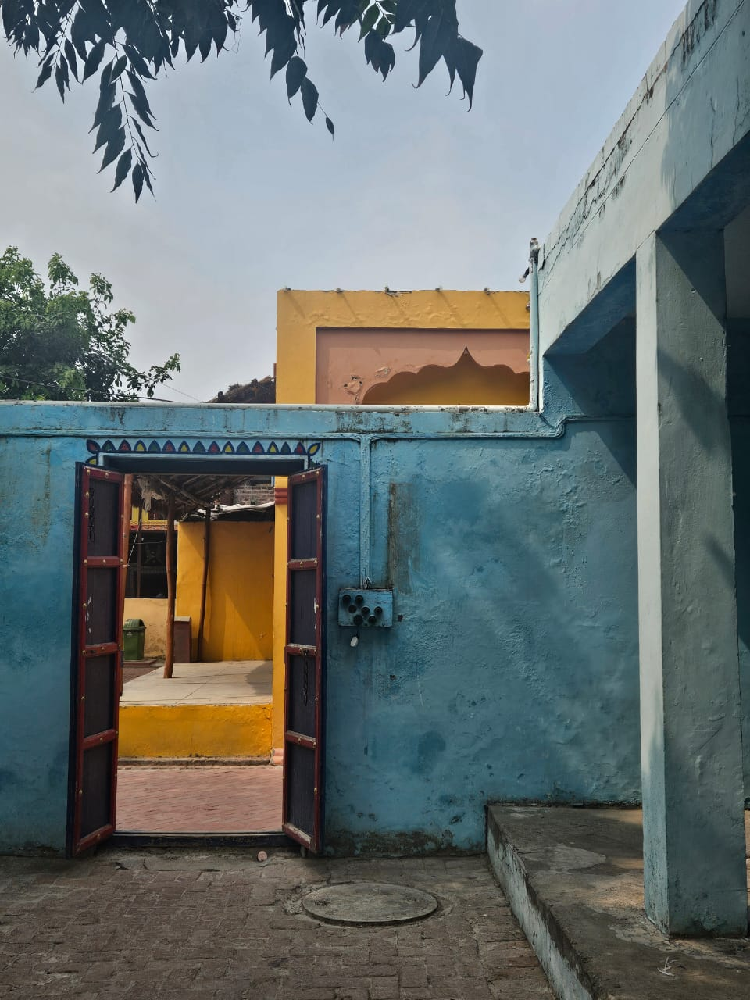

One day, you'll have to scroll really long to see the entire thing :)
Zoomed in on a map of Gujarat, packed our bags, only to find ourselves in its cultural capital. Visted the preserved home of the Gaekwad empire's diwan-- the then financial minister, saw cool art.



Worked with Prashant, founder @ Centre of Resilience. Manual work in building phases of his floating, flood-resistant house. Got treated with a Bhojpuri concert by his extended family.



Seva @ the Golden Temple; 30 mins of Bhangra; Witnessed the Wagah border tradition; museums and walking.


